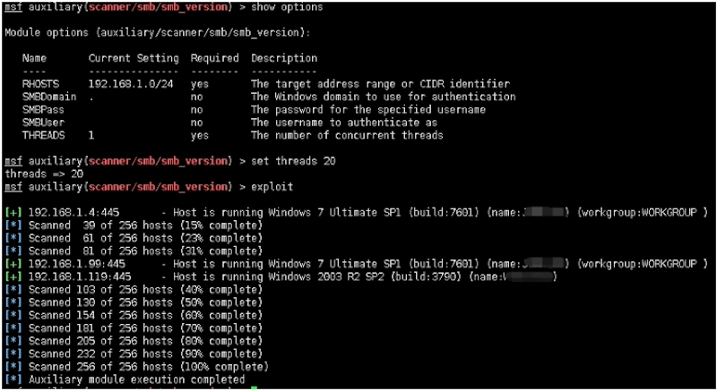
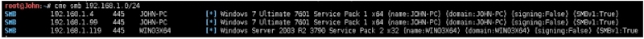
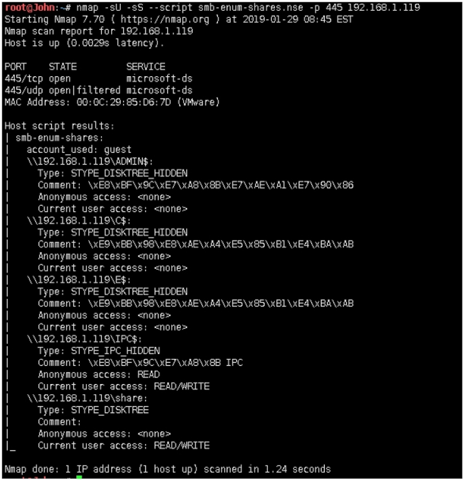
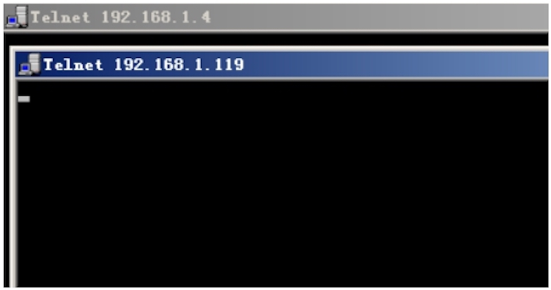
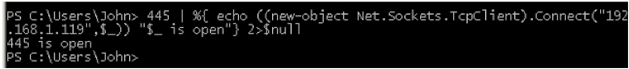
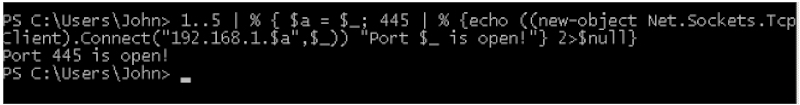
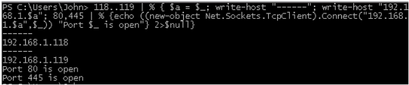

基于msf
模块：
scanner/smb/smb_version
msf auxiliary(scanner/smb/smb_version) > show options
Module options (auxiliary/scanner/smb/smb_version):
Name Current Setting Required Description
‐‐‐‐ ‐‐‐‐‐‐‐‐‐‐‐‐‐‐‐ ‐‐‐‐‐‐‐‐ ‐‐‐‐‐‐‐‐‐‐‐
RHOSTS 192.168.1.0/24 yes The target address range or CIDR identifier
SMBDomain . no The Windows domain to use for authentication
SMBPass no The password for the specified username
SMBUser no The username to authenticate as
THREADS 1 yes The number of concurrent threads
msf auxiliary(scanner/smb/smb_version) > set threads 20
threads => 20
msf auxiliary(scanner/smb/smb_version) > exploit
[+] 192.168.1.4:445 ‐ Host is running Windows 7 Ultimate SP1 (build:7601) (name:XXXXXX) (workgroup:WORKGROUP )
[*] Scanned 39 of 256 hosts (15% complete)
[*] Scanned 61 of 256 hosts (23% complete)
[*] Scanned 81 of 256 hosts (31% complete)
[+] 192.168.1.99:445 ‐ Host is running Windows 7 Ultimate SP1 (build:7601) (name:XXXXXX) (workgroup:WORKGROUP )
[+] 192.168.1.119:445 ‐ Host is running Windows 2003 R2 SP2 (build:3790) (name:XXXXXX)
[*] Scanned 103 of 256 hosts (40% complete)
[*] Scanned 130 of 256 hosts (50% complete)
[*] Scanned 154 of 256 hosts (60% complete)
[*] Scanned 181 of 256 hosts (70% complete)
[*] Scanned 205 of 256 hosts (80% complete)
[*] Scanned 232 of 256 hosts (90% complete)
[*] Scanned 256 of 256 hosts (100% complete)
[*] Auxiliary module execution completed

基于cme（参考第九十三课）
root@John:~# cme smb 192.168.1.0/24
SMB 192.168.1.4 445 JOHN‐PC [*] Windows 7 Ultimate 7601 Service Pack 1
x64 (name:JOHN‐PC) (domain:JOHN‐PC) (signing:False) (SMBv1:True)
SMB 192.168.1.99 445 JOHN‐PC [*] Windows 7 Ultimate 7601 Service Pack
x64 (name:JOHN‐PC) (domain:JOHN‐PC) (signing:False) (SMBv1:True)
SMB 192.168.1.119 445 WIN03X64 [*] Windows Server 2003 R2 3790 Service
Pack 2 x32 (name:WIN03X64) (domain:WIN03X64) (signing:False) (SMBv1:True

基于nmap
root@John:~# nmap ‐sU ‐sS ‐‐script smb‐enum‐shares.nse ‐p 445 192.168.1.119
Starting Nmap 7.70 ( https://nmap.org ) at 2019‐01‐29 08:45 EST
Nmap scan report for 192.168.1.119
Host is up (0.0029s latency).
PORT STATE SERVICE
445/tcp open microsoft‐ds
445/udp open|filtered microsoft‐ds
MAC Address: 00:0C:29:85:D6:7D (VMware)
Host script results:
| smb‐enum‐shares:
| account_used: guest
| \\192.168.1.119\ADMIN$:
| Type: STYPE_DISKTREE_HIDDEN
| Comment: \xE8\xBF\x9C\xE7\xA8\x8B\xE7\xAE\xA1\xE7\x90\x86
| Anonymous access: <none>
| Current user access: <none>
| \\192.168.1.119\C$:
| Type: STYPE_DISKTREE_HIDDEN
| Comment: \xE9\xBB\x98\xE8\xAE\xA4\xE5\x85\xB1\xE4\xBA\xAB
| Anonymous access: <none>
| Current user access: <none>
| \\192.168.1.119\E$:
| Type: STYPE_DISKTREE_HIDDEN
| Comment: \xE9\xBB\x98\xE8\xAE\xA4\xE5\x85\xB1\xE4\xBA\xAB
| Anonymous access: <none>
| Current user access: <none>
| \\192.168.1.119\IPC$:
| Type: STYPE_IPC_HIDDEN
| Comment: \xE8\xBF\x9C\xE7\xA8\x8B IPC
| Anonymous access: READ
| Current user access: READ/WRITE
| \\192.168.1.119\share:
| Type: STYPE_DISKTREE
| Comment:
| Anonymous access: <none>
|_ Current user access: READ/WRITE
Nmap done: 1 IP address (1 host up) scanned in 1.24 seconds

基于CMD：
for /l %a in (1,1,254) do start /min /low telnet 192.168.1.%a 445

基于powershell：
一句话扫描： 单IP：
445 | %{ echo ((new‐object Net.Sockets.TcpClient).Connect("192.168.1.1
19",$_)) "$_ is open"} 2>$null

多ip：
1..5 | % { $a = $_; 445 | % {echo ((new‐object
Net.Sockets.TcpClient).Connect("192.168.1.$a",$_)) "Port $_ is open"}
2>$null}

多port，多IP：
118..119 | % { $a = $_; write‐host "‐‐‐‐‐‐"; write‐host
"192.168.1.$a"; 80,445 | % {echo ((new‐object Net.Sockets.TcpClient).Conn
ect("192.168.1.$a",$_)) "Port $_ is open"} 2>$null}

Micropoor